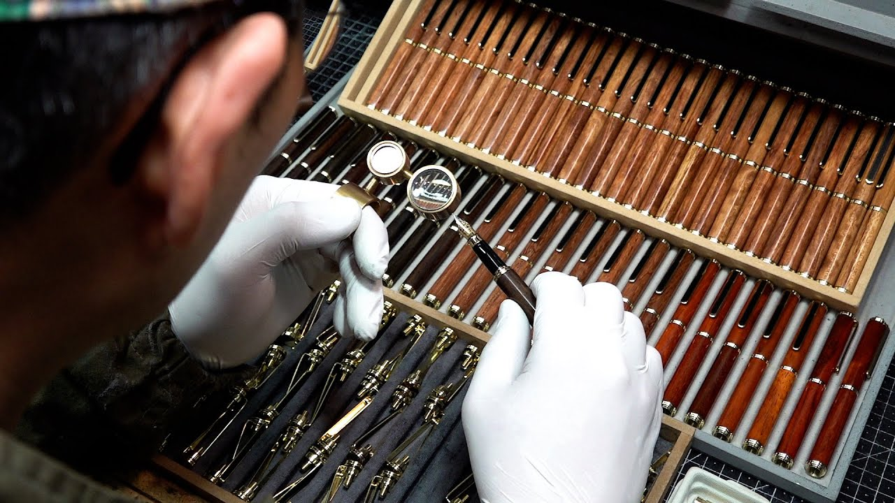

In a world of fleeting digital communication noise, Elementum crafts instruments designed to outlast generations.
Founded on the belief that written thoughts deserve the highest level of crafstmanship, Elementum began as a small shop dedicated to reviving classic European pen-making techniques.
Every Elementum fountain pen represents a balance between old-world metalwork with modern ergonomics, creating never before seen pieces of art. We strive to sculpt precision tools that elevate the act of writing into a ritual.

From solid aircraft-grade brass to rare elements and hand-turned resins, every component is hand selected for weight, longevity, and tactile response
The nib is the soul of a pen. Each 18k gold and stainless steel nib is hand-ground, polished, and tested before leaving the bench.
Built to be passed down. Every instrument carries a lifetime mechanical warranty. Guaranteeing performance for generations.